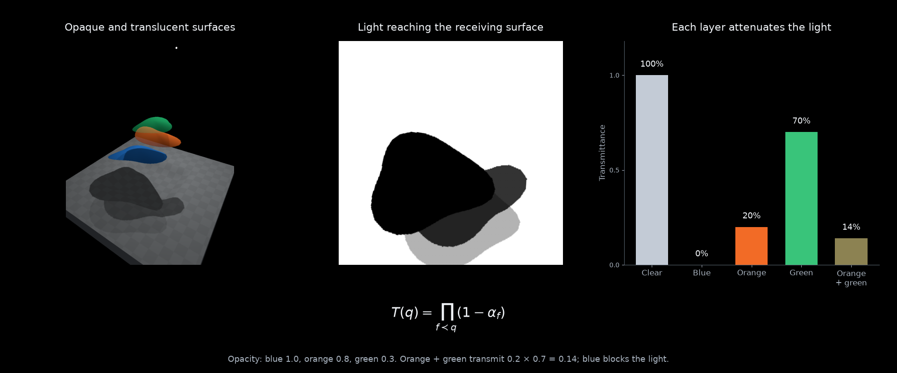

Differentiable visibility#
Recover the shape and opacity of three surfaces from the shadows they cast. Three fixed lights illuminate a recessed platform, and a loss on the shadows adjusts the surfaces above it. The blue object is opaque, the orange object is 80% opaque, and the green object is 30% opaque.
A light can be treated as a camera. Project a point on the receiver
into that camera and evaluate how much light reaches it through the intervening
surfaces. drtk.source_transmittance() returns these values in the receiver’s
query order, so the shadow lives in its original surface grid. Moving the
objects changes the shadow while the receiving points stay fixed.
Each column shows the scene illuminated by a different light, with the target and fitted transmittance maps below it. The maps are expressed in receiver UV coordinates, so the loss compares lighting at the same surface points throughout the optimization. The objects’ outlines, positions, heights, and material opacities are optimized together. The curve compares the default gradients with a control that disables visibility-boundary gradients.
Shadows through transparent surfaces#
For opaque objects, a point is either illuminated or blocked. A translucent surface with opacity \(\alpha\) passes a fraction \(1-\alpha\) of the light. With several layers, their transmittances multiply:
Here \(X(q)\) is a point on the receiving surface and \(\pi_k\) projects it into light \(k\). The product contains fragments preceding the receiver in the renderer’s stable triangle-depth order. The receiver’s own opacity is excluded.


Transmittance ranges from zero behind the opaque object to 0.7 behind the faint green surface. The orange-green overlap transmits \(0.2\times0.7=0.14\) of the light.#
For unoccluded direct illumination \(E_k(q)\), the shadowed illumination is
The example compares each light separately and uses unit unoccluded illumination, so its shadow intensity is simply transmittance. Distance falloff, receiver orientation, and light intensity can be included in \(E_k\). The scene views use Lambertian diffuse lighting, inverse-square falloff, and a small ambient term. These display effects do not enter the loss. This model describes attenuation by thin surfaces; refraction and multiple scattering require a different light-transport model.
Evaluating shadows on the receiver#
Create query points on the receiver using face IDs and 3D barycentric coordinates. Include both the shadow-casting objects and the receiver in the mesh. Transform its vertices into each light’s camera coordinates, with pixel XY and positive camera Z:
vertices = make_mesh(shape_parameters)
v_light = project_to_lights(vertices)
indices, weights, _, _ = drtk.source_transmittance(
v_light, faces, receiver_faces, receiver_barycentrics,
light_height, light_width,
vertex_opacity=material_opacity,
)
transmittance = weights.sum(-1).reshape(num_lights, H0, W0)
The operation evaluates transmittance at the four bilinear texel taps of each query. Its weights are \(w_{qj}=b_{qj}T_{qj}\), where \(b_{qj}\) is the bilinear coefficient. Summing them gives filtered transmittance. Taps outside the light’s image or the receiving surface contribute zero; size the light frustum to cover the receiving region. The example checks that every query returns one when the objects are fully transparent.
The output belongs to the receiving surface, rather than the light’s image plane. The query face IDs and barycentrics provide this correspondence; reshape using the original query-grid dimensions \(H_0\times W_0\). For a deforming receiver, keep the queries attached to its triangles to preserve their UV correspondence.
A projector can supply a spatially varying image instead of uniform light:
illumination, confidence = drtk.sample_with_transmittance(
light_image, indices, weights
)
illumination = illumination.reshape(num_lights, channels, H0, W0)
illumination already includes attenuation. The same indices and weights
can be applied to several image or feature channels on the light’s grid.
Fitting shape and opacity#
The three target shadow maps are generated from curved surfaces with different opacities. Each surface has a radial outline with seven Fourier coefficients, a 3D position, and one material opacity. Its tilt and bowing remain fixed. The fit starts from displaced, distorted outlines with different sizes. The initial opacities are 0.3, 0.5, and 1.0 for blue, orange, and green: the object that should be opaque starts mostly transparent, while the faintest target starts opaque.
Let \(\theta\) contain the geometry parameters and let \(\alpha\in[0,1]\) contain their opacities. The objective is
Only the target shadows enter this loss. The 3D views show what is being optimized but supply no image or geometry supervision.
optimizer.zero_grad()
transmittance = evaluate_shadows(shape, opacity)
loss = (transmittance - target_shadows).square().mean()
loss.backward()
optimizer.step()
with torch.no_grad():
opacity.clamp_(0, 1)
For fixed coverage, transmittance is differentiable with respect to opacity:
Moving an object also moves its shadow boundary. That coverage change needs the boundary-motion estimator, enabled by default. Smooth derivatives alone adjust the opacities in this scene but leave the geometry unchanged.
The fit uses projected Adam steps: after each update, opacities are clamped to the valid interval. This permits an exactly opaque surface at \(\alpha=1\), as well as partially transmitting surfaces. With boundary gradients, 300 steps recover opacities close to 1.0, 0.8, and 0.3 and align all three shadow maps. The smooth-gradient control adjusts opacity but retains the initial shape and position. The finite shadow grid limits geometric precision: matching its samples does not imply a unique reconstruction of an arbitrary object. Multiple lights constrain more shape directions than a single shadow.
Textured and learned opacity#
A patterned or spatially varying surface needs the same opacity field in
its shadow calculation and its rendered appearance. Use
drtk.source_transmittance_texture() with the texture and UVs passed to
drtk.render_transparent():
indices, weights, _, _ = drtk.source_transmittance_texture(
v_light, faces, uv, rgba_texture,
receiver_faces, receiver_barycentrics, light_height, light_width,
vertex_opacity=material_opacity, alpha_activation="clamp",
)
shadow = weights.sum(-1).reshape(num_lights, H0, W0)
loss = (shadow - target_shadows).square().mean()
loss.backward()
Here "clamp" treats the fourth texture channel as opacity. The default,
"relu_density", instead maps a nonnegative density to opacity. Both the
visibility calculation and the renderer must use the same activation.
Gradients from the shadow loss reach the texture, its UVs, material opacity,
and geometry. Texture filtering occurs before alpha activation.
For neural appearance, use drtk.source_transmittance_mlp() or
drtk.source_transmittance_mlp_two_textures() with the same feature
textures and MLP as the matching transparent renderer. For example, an
original UV map and a deformed UV map can sample two feature fields:
indices, weights, _, _ = drtk.source_transmittance_mlp_two_textures(
v_light, faces, original_uv, deformed_uv,
original_features, deformed_features, mlp_weights, mlp_biases,
receiver_faces, receiver_barycentrics, light_height, light_width,
vertex_opacity=material_opacity,
)
shadow = weights.sum(-1).reshape(num_lights, H0, W0)
(shadow - target_shadows).square().mean().backward()
The shadow loss differentiates both feature fields, both UV maps, and the MLP’s opacity prediction. The RGB outputs do not affect transmittance. These appearance features must exist before evaluating visibility. Features gathered with the resulting weights can feed a later refinement stage.
From lights to camera features#
Replace the light with a source camera and its illumination image with an image-feature map. The same operation then returns attenuated observations at the original surface points:
sampled, confidence = drtk.sample_with_transmittance(
source_features, indices, weights
)
sampled = sampled.reshape(num_views, num_channels, H0, W0)
confidence = confidence.reshape(num_views, 1, H0, W0)
prediction = model(original_features, sampled, confidence)
Confidence distinguishes an attenuated observation from an observed feature whose value is zero. Features already mixed by transparency or a feature extractor remain mixed; transmittance describes access to the observation.
Run the example#
Download source_features_demo.py.
It requires a CUDA-enabled DRTK installation, Matplotlib, and FFmpeg.
python source_features_demo.py --output ./source_features_demo
The output contains a 1920×1600 optimization video showing every iteration, a shadow illustration, snapshots, measurements, and saved geometry and UV transmittance fields. Scene views render at 768×1024, light views at 1024×1024, and receiver maps at 512×512. See drtk.source_transmittance for tensor shapes, camera conventions, and gradient behavior.